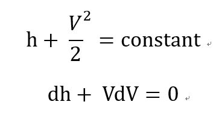
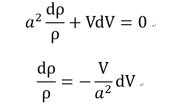
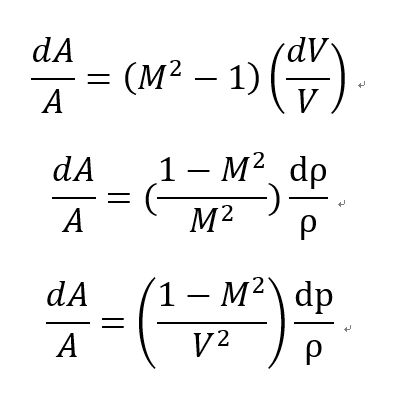
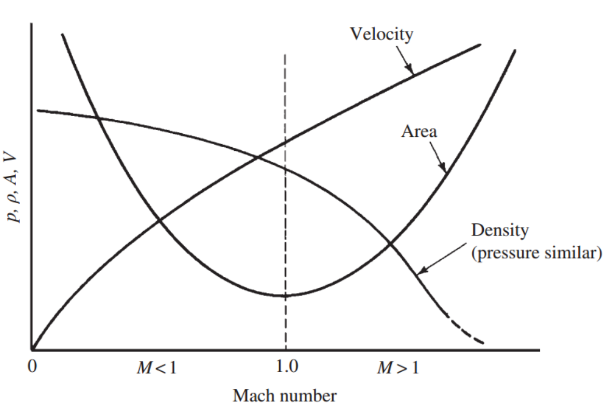
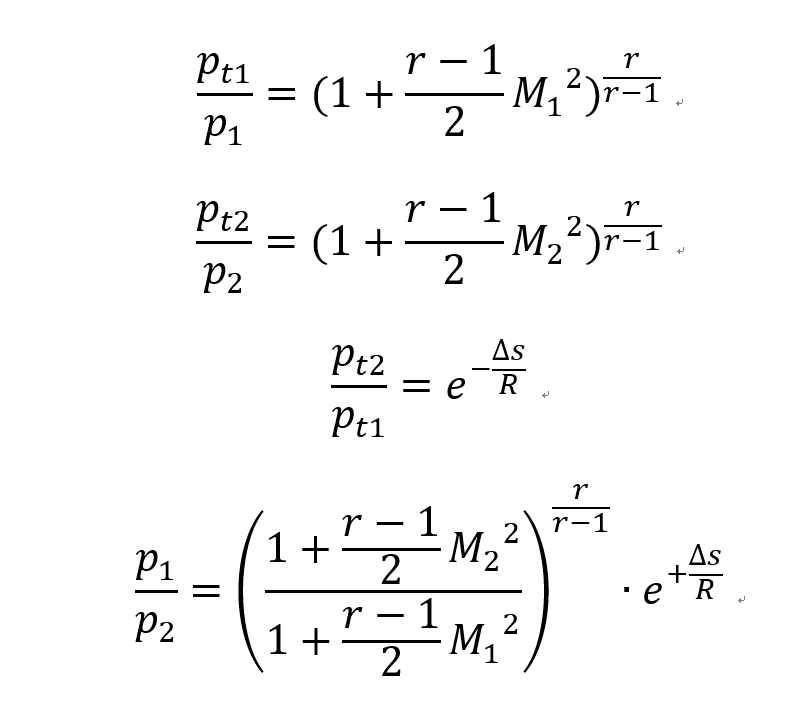
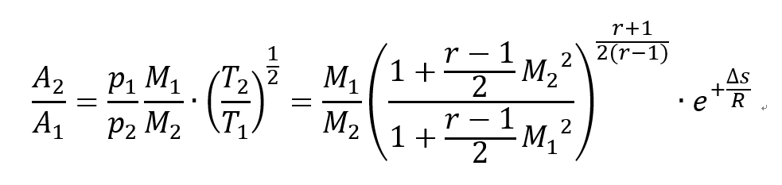

[Gas Dynamics] Ch 5 Varying - Area Adiabatic Flow - part1
사실 지금까지 배운거는 사실상 Gas dynamics 시작 전이였다....
결국 우리가 배울 것들을 위해서 재료들을 하나하나 다 확인 한 느낌?
재료들이 뭐였는지 한번만 다시 생각해보자
-
Continuity Equation by Reynolds Transport Theorem
-
Linear momentum Equation by Reynolds Transport Theorem
- Energy Equation by Reynolds Transport Theorem
-
Entropy 의 개념을 이용하여 Stagnation pressure - energy equation
-
Entropy 의 개념을 이용하여 Stagnation pressure - entropy equation
-
Stagnation properties 와 Static propoerties들의 관계 (stagnation pressure, enthalpy)
-
Ma number 을 이용한 Temperature, pressure ratio
-
Ma number 을 이용한 mass flow rate
이제 진짜 Gas dyanmics flow system 을 분석해보자
Gas flow system 에서는 3가지 Factors들이 가장 중요하다
이 요소에 따라서 Governing Equations 가 아예 달라진다.
1. Area change
2. Friction
3. Heat transfer
위 순서대로 하나하나 어떻게 Flow가 달라지는지 확인 할 예정. 근데 교재에서 이렇게 언급했다.
"The majority engineering problems are such that only one of these factors becomes the dominant influence for any particular device."
그니까 동시에 전부 고려해야 하는 문제들도 있지만 대부분은 한개가 압도적으로 영향력이 크니까
1번을 고려할때는 2,3번은 무시하는 식으로 분석한다는 말이다.
서론이 too much 였으므로 Area change factor부터 들어가보자
2,3번 factor을 무시한 assumption 들은
-Steady state process
- 1-D analysis
-No heat transfer (adiabatic)
-No friction
- Negligible potential
1. Continuity equation
![[Gas Dynamics] Ch 5 Varying - Area Adiabatic Flow - part1](./images/img-001.png)
2. Energy equation
No heat transfer, no shaft work 이므로 Stagnation enthalpy constant

뿐만아니라 No friction 이므로 ds = 0 임은 자명하다.
따라서 열역학 제 1법칙, 2법칙을 이용한 에너지 equation, dq= Tds = dh - vdp =0 (ch2 유도)
에서 위의 dh+VdV = 0식을 연립 해주면
![[Gas Dynamics] Ch 5 Varying - Area Adiabatic Flow - part1](./images/img-003.png)
3. Speed of sound
![[Gas Dynamics] Ch 5 Varying - Area Adiabatic Flow - part1](./images/img-004.png)
ch4 에서 우리는 Isentropic process에서 partial derivative form 임을 확인 하였다.
핵심은 여기서 가정이 Isentropic(adiabatic + reversible)이므로 편비문을 total derivative form 으로 전환가능하다.
3식 -> 2식에 대입하여 다음과 같이 dP를 제거해주고

2식 -> 1식에 대입하여 밀도 term제거 하여
V와 A의 관계식을 유도해보자
![[Gas Dynamics] Ch 5 Varying - Area Adiabatic Flow - part1](./images/img-006.png)
이제는 2식 -> 1식에 대입하여 속도 term제거 하여
ρ 와 A의 관계식을 유도해보자
![[Gas Dynamics] Ch 5 Varying - Area Adiabatic Flow - part1](./images/img-007.png)
마지막으로 위 식에 a^2= dp/d
ρ를 대입하여
압력 A의 관계식을 유도해보자
![[Gas Dynamics] Ch 5 Varying - Area Adiabatic Flow - part1](./images/img-008.png)
지금까지 유도한 식들은 다음과 같다.

이제 위 식들이 의미하는게 뭔지를 Ma>1, Ma<1 , Ma = 1일때로 나누어서 해석해보자.
밑의 그림과 같이

Ma<1 일때는
dA > 0 -> 속도 감소, 밀도 증가, 압력 증가 ( Diffuser )
dA < 0 -> 속도 증가, 밀도 감소, 압력 감소 ( Nozzle )
Ma>1 일때는
dA > 0 -> 속도 증가, 밀도 감소, 압력 감소 ( Nozzle )
dA < 0 ->
속도 감소, 밀도 증가, 압력 증가 ( Diffuser )
Ma =1 일때는 dA =0 무조건
![[Gas Dynamics] Ch 5 Varying - Area Adiabatic Flow - part1](./images/img-011.png)
Nozzle pic
자 이제 한발 더 가서 면적 비율(A2/A1) 을 Ma 로 표현해보자
먼저 Continuity Eq을 통해서
ρAV = constant + Ma 정의 + Ideal gas P = ρRT 로 수식을 정리하면
![[Gas Dynamics] Ch 5 Varying - Area Adiabatic Flow - part1](./images/img-012.png)
이제 여기서 압력비율, 온도비율을 Ma 로 표현하면 ->> 최종적으로 면적비율을 Ma로 표현 할 수 있다.
1. 온도비율과 Ma의 관계
먼저 Stagnation Temperature, static temperature 의 관계식은 ch4 에서 다뤘었다.
+ Adabatic + no shaft work 이므로 Stagnation enthalpy, Temperature 일정하다.
![[Gas Dynamics] Ch 5 Varying - Area Adiabatic Flow - part1](./images/img-013.png)
2. 압력비율과 Ma의 관계
다음으로 Stagnation pressure과 static pressure의 관계도 ch4 에서 다뤘었다.
거기에 Stagnation Pressure - Entropy Equation 을 대입하면 압력비율을 Ma의 식으로 다음과 같이 표현 possible

처음에 작성한 Continuity eq에 모두 대입해주면 최종적으로 ...

면적비율을 Ma로 표현 할 수 있게 된다.
이제 Part2에서 뵙겠스빈다.